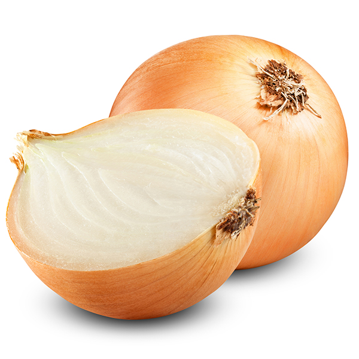
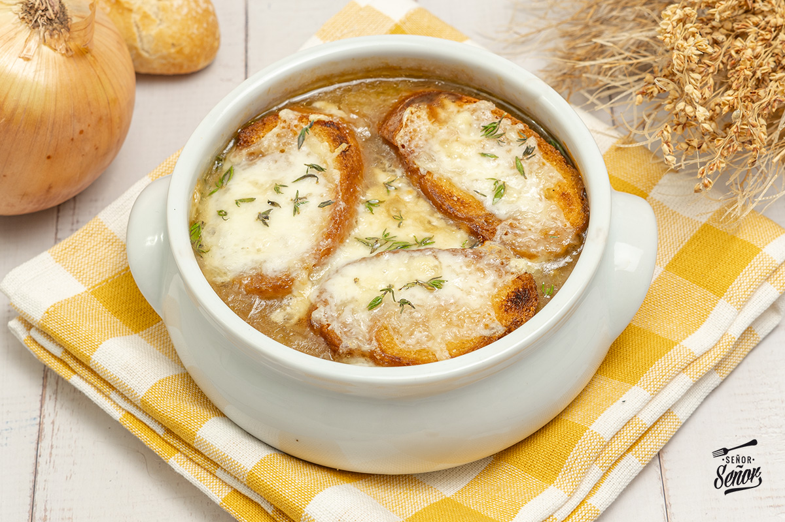

Sopa de Cebolla (4 personas)
Ingredientes
- 1 Kg. de cebollas.
- 2l. de caldo de carne
- 100 gr. mantequilla
- 1 cucharada de harina
- 100 gr. de queso emmental suizo o gruyére rallado
- Pan Tostado en rebanadas
- Tomillo.
- 1 hoja de laurel.
- Pimienta


Proceso
- Pelar y partir las cebollas en rodajas finas.
- Rehogarlas con la mantequilla, sal y pimienta a fuego lento hasta que estén transparentes sin dorarse.
- Añadir la harina sin dejar de remover.
- Ponerlo en una cazuela con el caldo, el tomillo y el laurel.
- Dejar cocer a fuego lento durante unos 15 minutos.
- Poner las rebanadas de pan encima, espolvorear el queso y gratinar al horno.
RESULTADO FINAL
